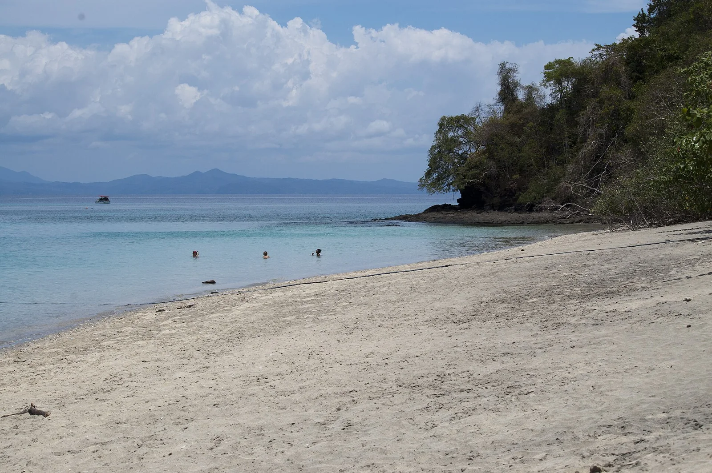

Nosy Tanikely
Nosy Be, Madagascar · snorkeling, plongée, baignade

Une réserve marine autour d'un îlot : tortues, poissons de récif et coraux à quelques mètres du bord. L'un des meilleurs sites de snorkeling de l'océan Indien.
- Lieu
- Nosy Be, Madagascar
- Niveau
- Débutant
- Activités
- snorkeling, plongée, baignade
- Type d'eau
- Mer / océan
- Coordonnées
- -13.48, 48.24 (position approximative du secteur)
Dangers à connaître
- Navettes et pirogues autour de l'îlot.
- Aucune ombre sur la plage, soleil équatorial.
Le conseil d'Ocean Buddy
Un lycra plutôt que de la crème : le récif est protégé, et tu bronzes moins bêtement.
Ouvrir dans Ocean Buddy Télécharger sur l'App Store
Source : Description historique Ocean Buddy · vérification externe en attente.